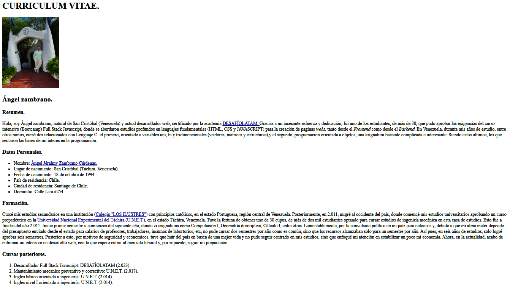
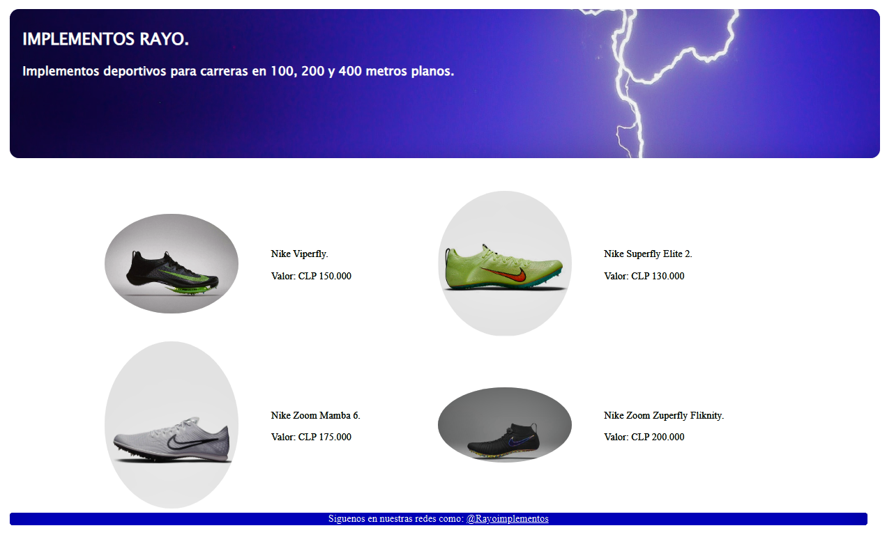
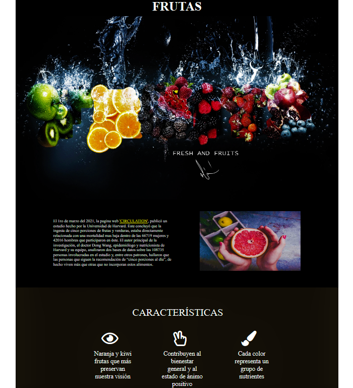

| Descripción | Muestra | ||||
|---|---|---|---|---|---|
Introducción a HTML: en este primer desafío del modulo uno, estudiamos la estructura de un documento con la extensión ".html", sus caracteristicas, sus partes y diferente componentes. Finalmente, se nos solicitó crear un pequeño Curriculum Vitae. Esta fue mi creación. |
 | ||||
Introducción a CSS: en este segundo desafío del modulo uno, analizamos la composición, herramientas y funcionalidades de este lenguaje. Así pues, se nos solicito la creación de una pequeña pagina web usando las herramientas de CSS vistas en clase hasta el momento. |
 | ||||
Flexbox: para el tercer desafío de este modulo, analizamos un poco en profundidad esta herramienta de posicionamiento. Es importante destacar, esta permite una distribución de los contenedores hijos de una manera mucho más expedita, lo que reduce el tiempo de creación exponencialmente. Tambien, se abordaron tópicos como la incorporación de íconos. |
 | ||||
Bootstrap: cuarto desafío. |
|
||||
Git, Gthub y terminal: desafío cinco. |
|